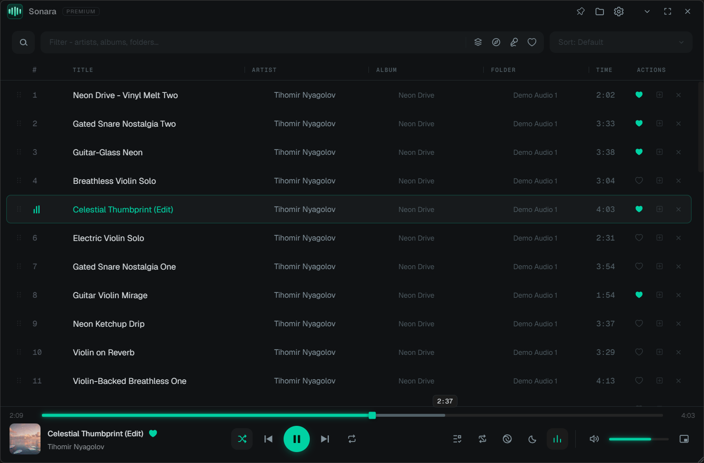

A fast, beautiful, local-first music player for Windows. No cloud, no account, no telemetry. Just your library, played the way you want.
Free forever. Pro features unlock with a one-time license. See what's included.

Everything is designed around a local library: folders in, music out, zero friction in between.
Drop folders in and play. MP3, FLAC, WAV, OGG and M4A, smooth with thousands of tracks.
Tracks preload before they're needed and can blend into each other, even on repeat-one.
Time-synced lyrics from your files, inline or fullscreen, without covering your controls.
A slim always-on-top ribbon with a live equalizer readout, scrolling title and edge snapping.
Big targets, swipe selection and drag reordering that feel right on a Surface or any touch screen.
No account. No telemetry. Your library and listening history never leave your computer.
The free player is complete, not crippled. Pro adds power-listening workflow on top.
Sonara is an independent local-first player. Support keeps the beta moving without accounts, ads, or telemetry.
If Sonara becomes part of your daily listening, a one-time Pro license will be the calm way to support future development.
Support SonaraFor now, Pro is not open for purchase. Beta testers get keys when licensing is ready.
Short answers to the things people actually ask.
Yes. The beta is simply not code-signed yet (certificates are expensive for a free beta). Click More info → Run anyway. Every download is built from the same source and published only on our GitHub Releases page. A Microsoft Store version (signed by Microsoft) is planned for the stable release.
No. Sonara is local-first: playback, your library, lyrics and even Pro license activation work fully offline. The only optional network features are the update check and Discord presence.
MP3, FLAC, WAV, OGG and M4A/AAC on Windows 10 and 11. Native builds for both x64 and ARM64 (Snapdragon laptops run it natively, not emulated).
Yes. A zip you can unpack anywhere and run, no installation. Perfect for USB sticks and locked-down machines.
The uninstaller asks. By default your library, likes and settings are kept, so reinstalling later picks everything back up. You can choose to wipe everything instead.
One key, one-time payment, up to 3 of your own computers. Activation works offline and the license never expires. If you ever hit a problem, deactivate on one machine and activate on another.